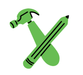

Volunteering and Events
Explore our volunteer, event, and action listings to discover ways to make an impact in your community.

Social-Impact Jobs
Use our location, experience level, and issue area job-search filters to find your perfect-fit career opportunity.
Salary Explorer
Find your earning potential with our new salary calculator that allows you to compare salaries and possible career paths.